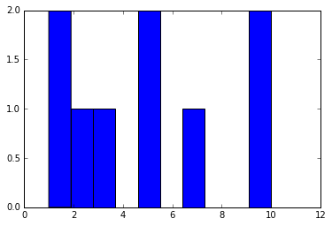

First post!
This will be the first post in our new Pelican blog! You can add any code or markdown cells to this Jupyter notebook, and they will be rendered on your blog.
import random
random.randint(0,100)
4
import matplotlib.pyplot as plt
%matplotlib inline
plt.hist([10,5,7,10,1,1,2,3,5])
(array([ 2., 1., 1., 0., 2., 0., 1., 0., 0., 2.]),
array([ 1. , 1.9, 2.8, 3.7, 4.6, 5.5, 6.4, 7.3, 8.2,
9.1, 10. ]),
<a list of 10 Patch objects>)
